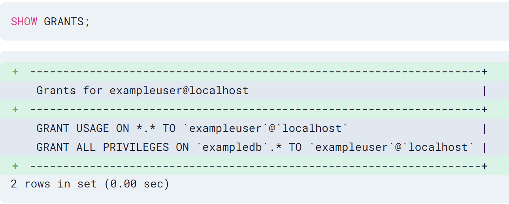
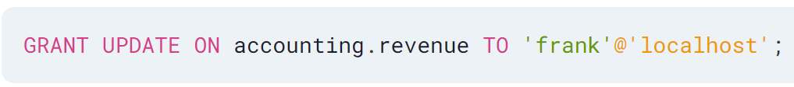
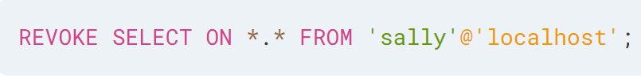

Data Control Language(DCL) deals with the commands used in SQL that permit a user to access, modify or work on the different privileges in order to control the database. It allows the database owner to give access, revoke access, and change the given permissions as and when required. DCL is basically used for enforcing data security.
The DCL commands present in SQL are

1. GRANT: GRANT is a DCL command used to grant(give access to) security privileges to specific database users. It is mostly used to restrict user access to INSERT, DELETE, SELECT, UPDATE, EXECUTE, ALTER or to provide privileges to user's data.
Syntax:
GRANT (privileges) ON (object name) TO (user/roles)

2. REVOKE: REVOKE is a DCL command that is used to revoke the permissions/access that was granted via the GRANT command. It is mostly used to revert back to the time when no access was specified, i.e., withdrawing the permission that was authorized to carry out specific tasks.
Syntax:
REVOKE (privileges) ON (object name) FROM (user/roles)
Explanation:
(privileges): Privileges here refers to the INSERT,DELETE,SELECT,UPDATE, EXECUTE, ALTER, ALL, reference privilege(reference privilege permits a user/role to declare foreign keys while creating relations) and all options provided by SQL.
(object_name): Object could be anything amongst table, view or functions.
(user/roles): Roles are the users to whom the privileges are granted or revoked.
